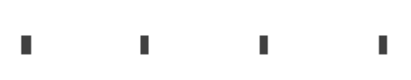

使用d2绘图
是一款脚本绘图语言程序, 提供丰富的特性, 其中我最喜欢的功能包括可生成箭头流动效果
Table of Contents
Introduction
D2 是一款脚本绘图语言程序, 提供丰富的特性 , 其中我最喜欢的功能包括可生成箭头流动效果,简洁的语法, 避免使用 quote (引号) 对空格的支持, 多类型的布局等等, 我们首先说下 D2 的布局, 一共分为3种布局
- dagre ,一种有向图, 基于 Graphviz’s DOT 算法不布局, 如果你很熟悉dot 不妨试试这种布局
- ELK ,也是一种有向图, 但官方宣称比dagre更成熟
- TALA, 全新的 付费 布局引擎, 官方宣称是特别针对软件框架图而设计的布局
综合来说, 其实官方也没说的很明白,不过由于 TALA 是付费的布局,有专门的网站和演示案例. 确实让人心动.幸运的是虽说 TALA 是付费的,但他却提供软件的源代码,我们仍然可以使用 TALA 布局只不过在生成出来的图片中含有 LICENSE COPY 的水印（后面讲怎么去除）.
Usage
你的第一个D2架构图,代码如下.
- direction 代表了布局的方向,
- style.fill 代表了背景图与 dot 和 plantuml 一样,都可以支持透明背景 transparent.
- d2支持我们定义一些预置的 class 样式,见classes代码片段.
- 连接线的样式中有我们喜闻乐见的 style.animated 这就是连接线动态效果的设置.
- 在最新的 v0.6.0 中,可以通过在vars对象中的键值对来申明变量,这极大方便了我们在画图时对颜色和属性的重复引用.
- 在最新的 v0.6.0 中,可以使用通配符来指定节点的样式 *.style.fill（目前仅针支持节点,不支持连接线）.
接下来我声明了A、B、C 3个节点,并且分别引用 2dn(2d node) 和 3dn(3d node).
direction : right
style.fill : transparent
vars: {
nodecolor : "#E67E22"
style-stroke : "#17202A"
style-stroke-width : 2
style-fill-pattern : dots
style-shadow : true
line-style-fill : "#884EA0"
}
classes: {
2dn: {
style.multiple : true
}
3dn: {
style.3d : true
}
2de: {
style.animated : true
style.stroke-width : ${style-stroke-width}
style.stroke : ${line-style-fill}
}
}
A : { class : 2dn }
B : { class : 3dn }
C : { class : 3dn }
A -> B -> C -> D{ class : 2de }
*.style.fill : ${nodecolor}
*.style.stroke : ${style-stroke}
*.style.stroke-width : ${style-stroke-width}
*.style.fill-pattern : ${style-fill-pattern}
*.style.shadow : ${style-shadow}

Org mode
最后分享如何在 org mode 中使用d2.
在 org mode 中引入新的 src block 执行代码块,你可以使用如下代码作为参考.我在这里增加了d2的手绘风格的代码,其原因是d2的部分设置需要在命令行上进行设置.类似于图片间宽、布局引擎、动画速率等参数均是通过命令行参数来设置的,无法在src block内进行设定.因此我在fish内增加了软连接带入默认参数,以此来实现在org mode中进行不同风格的d2设置切换.
alias ds2 "~/soft/d2-v0.6.0/bin/d2 --sketch --animate-interval=1400 -l elk -c --pad 0"
;;; ds2.el --- Babel Functions for ds2 -*- lexical-binding: t; -*-
;; Copyright (C) 2009-2022 Free Software Foundation, Inc.
;; Author: Eric Schulte
;; Maintainer: Justin Abrahms <justin@abrah.ms>
;; Keywords: literate programming, reproducible research
;; URL: https://orgmode.org
;; This file is part of GNU Emacs.
;; GNU Emacs is free software: you can redistribute it and/or modify
;; it under the terms of the GNU General Public License as published by
;; the Free Software Foundation, either version 3 of the License, or
;; (at your option) any later version.
;; GNU Emacs is distributed in the hope that it will be useful,
;; but WITHOUT ANY WARRANTY; without even the implied warranty of
;; MERCHANTABILITY or FITNESS FOR A PARTICULAR PURPOSE. See the
;; GNU General Public License for more details.
;; You should have received a copy of the GNU General Public License
;; along with GNU Emacs. If not, see <https://www.gnu.org/licenses/>.
;;; Commentary:
(require 'org-macs)
(org-assert-version)
(defvar org-babel-default-header-args:ds2
'((:results . "file") (:exports . "results"))
"Default arguments to use when evaluating a ds2 source block.")
(defun org-babel-expand-body:ds2 (body params)
"Expand BODY according to PARAMS, return the expanded body."
(let ((vars (org-babel--get-vars params)))
(mapc
(lambda (pair)
(let ((name (symbol-name (car pair)))
(value (cdr pair)))
(setq body
(replace-regexp-in-string
(concat "$" (regexp-quote name))
(if (stringp value) value (format "%S" value))
body
t
t))))
vars)
body))
(defun org-babel-execute:ds2 (body params)
" This function is called by `org-babel-execute-src-block'."
(let* ((out-file (cdr (or (assq :file params)
(error "You need to specify a :file parameter"))))
(cmdline (or (cdr (assq :cmdline params))))
(cmd (or (cdr (assq :cmd params)) (concat "ds2 " "")))
(coding-system-for-read 'utf-8) ;use utf-8 with sub-processes
(coding-system-for-write 'utf-8)
(in-file (org-babel-temp-file "ds2-")))
(with-temp-file in-file
(insert (org-babel-expand-body:ds2 body params)))
(org-babel-eval
(concat cmd
" " (org-babel-process-file-name in-file)
" " cmdline
" " (org-babel-process-file-name out-file)) "")
nil)) ;; signal that output has already been written to file
(defun org-babel-prep-session:ds2 (_session _params)
"Return an error because ds2 does not support sessions."
(error "ds2 does not support sessions"))
(provide 'ds2)
TALA License
经常性的在 org mode 中导出 html ,遇到最多的问题是,当我们把 html 发送给其他人时,里面的图片就不能打开了.这是因为我们发送出去的仅是 html 代码, 只包括了图片地址,不包括图片的内容. 为了解决这个问题,我们可以在生成 html 的同时将图片以base64的形式直接嵌入至html文件内.
d2 的 TALA 布局是一个收费的布局引擎,但幸运的是尽管他收费,但是却开源.我们仍然可以下载TALA引擎的二进制执行文件,只不过在未授权的时候会在图片中生成 UNLICENSED COPY 的水印.svg的水印很好去除,用text-mode打开文件,找到水印字样删除即可.利用上面的在将图片转换成BASE64的时候我们仅需要将 UNLICENSED COPY 替换成空就完成了水印去除了.
;; html image base64
(defun org-html--format-image-old (source attributes info)
(org-html-close-tag
"img"
(org-html--make-attribute-string
(org-combine-plists
(list :src source
:alt (if (string-match-p
(concat "^" org-preview-latex-image-directory) source)
(org-html-encode-plain-text
(org-find-text-property-in-string 'org-latex-src source))
(file-name-nondirectory source)))
(if (string= "svg" (file-name-extension source))
(org-combine-plists '(:class "org-svg") attributes '(:fallback nil))
attributes)))
info))
(defun org-org-html--format-image (source attributes info)
;; doc
(if (string-match "http" source)
(org-html--format-image-old source attributes info)
(format "<img src=\"data:image/%s+xml;base64,%s\"%s width=%s />"
(or (file-name-extension source) "")
(base64-encode-string
(with-temp-buffer
(insert-file-contents-literally source)
(string-replace "UNLICENSED COPY" " "
(buffer-string))))
(file-name-nondirectory source)
"100%")))
(advice-add #'org-html--format-image :override #'org-org-html--format-image)